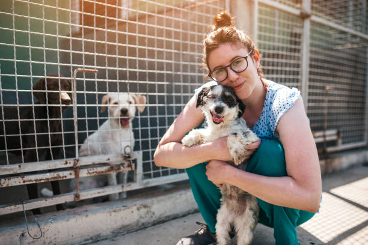

By volunteering, you contribute to a cause you care about. So, if you are passionate about saving animals, volunteering at Adopt Don't Stop would be right up your alley. And even more, you create a better community to live in. Volunteering inherently means helping, and it provides the unique opportunity of connecting people in the community with shared values. Volunteering makes a difference in your community because it allows us to make a real difference to the lives of the animals, people, and organization in need. This holistic approach creates a better community for everyone. Volunteering at an animal shelter can be emotionally testing. Yes, you will see abandoned, injured, and ill animals. It can be quite sad to see these animals being left and treated the way they all too often are. However, there is another side to this story. It’s the feeling you get when you get to see a dog, cat, or any other animal in the shelter make a recovery and get adopted by a loving family. You can volunteer to foster animals from the shelter. We cannot emphasize enough how important fostering is. It can make a difference of life and death since shelters can be high risk zones of infections. It can also save two lives at once. One of the dog/pup/kitten you have taken under your care, and second of the animal that we are able to accept at the shelter because of the space created. The minimum foster period we require is two weeks. The longer the better because moving an animal from home to home can be disorientating and confusing for the animal. We would like to point out here that fostering needs a string heart. You need to be able to stay a little detached from the animal you take under your wing else there can be a lot of heart break lying ahead for you. But it is all worth it at the end – because there is no greater satisfaction than in being able to contribute towards saving a life. We look forward to helping you find a volunteer role that matches your skills, interests and schedule so that you can make a big difference in the lives of animals in need.
Adopt Don't Shop needs your help, and there are many ways you can lend a hand to us to look after the animals under our care. One of the best ways to help is by VOLUNTEERING YOUR TIME AND SERVICES.We need dedicated volunteers to speak with prospective adopters, meet them for pre-adoption house checks, and follow up on the adopted dogs/pups with post-adoption house checks. But to be part of the ADOPTION TEAM you have to be a committed and consistent volunteer.